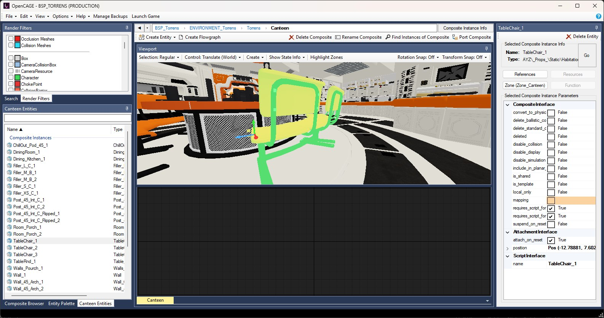
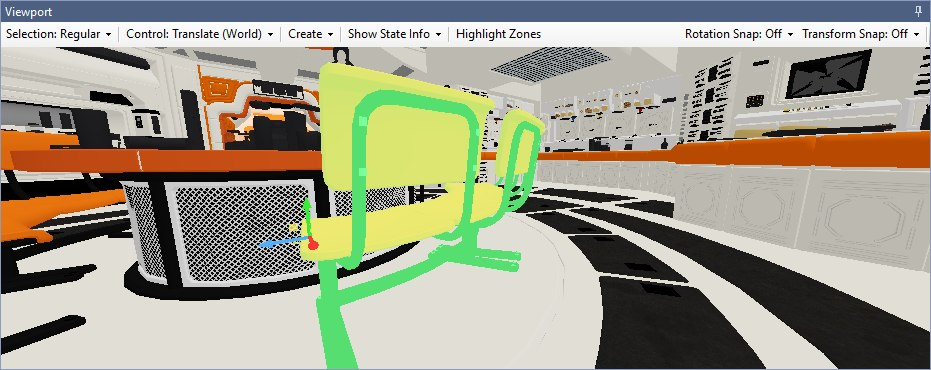
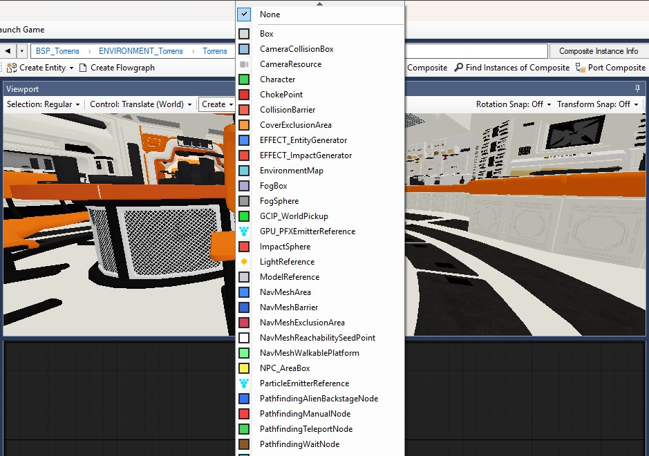
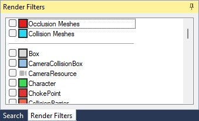
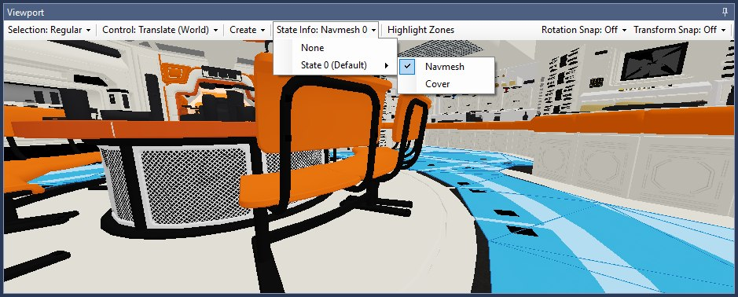
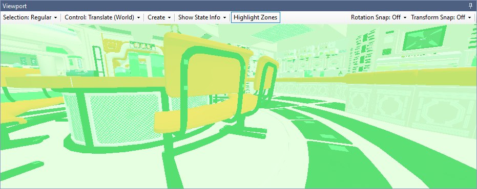
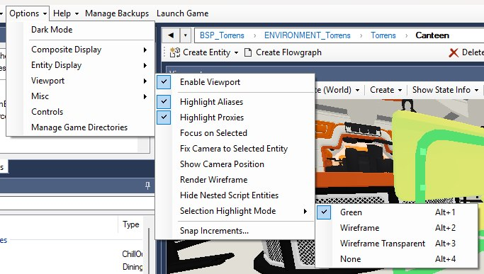
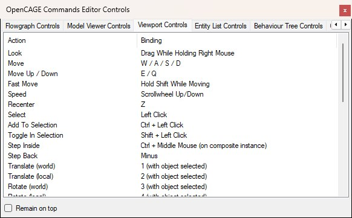

The Viewport is OpenCAGE's 3D view of the level — part of the script editor, docked above the flowgraph in the composite display. Use it to place triggers, models, markers, and anything else that benefits from seeing the level in context.
This guide covers navigating the scene, selection and box select, deep select, the right-click menu, moving and snapping entities, creating and duplicating them, the sky, zones, and render filters.

When you load a level, the Viewport appears automatically (unless you've disabled it — see below). While the scene is filling in, OpenCAGE shows a Populating … in viewport… progress state.
Selection and transforms you make in the Viewport are the same edits as in the rest of the script editor — hierarchy, parameters, and the 3D view stay on the same selection.
Resource edits reach it too: a model you import, a texture you replace or a material you change in the Model, Texture or Material editors shows up in the Viewport moments later, without saving or reloading the level.
The Viewport toolbar, pictured below, covers Selection Mode, gizmo Control, Create (entity placement), Show State Info (navmesh / cover overlays) and Highlight Zones on the left, with Rotation Snap and Transform Snap at the right-hand end. Each dropdown's label shows its current choice, so the toolbar in the picture reads Selection: Regular, Control: Translate (World), Rotation Snap: Off and Transform Snap: Off.

The Viewport panel with a canteen table selected: the green tint and the translate gizmo mark the selection, and each toolbar dropdown's label reads back its current choice.
Options → Viewport → Enable Viewport (the menu is pictured under Viewport Options below) turns the 3D view on or off, and the setting is remembered. Turn it off if you want lower memory usage and faster load times, knowing you won't get the 3D view; the rest of the Viewport options are greyed out while it's off.
Turning it back on with unsaved changes asks whether to save first. The Viewport reads the level from disk, so anything edited while it was off wouldn't be in what it loads — answer Yes to save and open it straight away, or No to keep the setting on and have the Viewport open the next time a level is loaded.
Two other ways to run without it: the -disable_viewport launch option (set it under OpenCAGE's properties → Launch Options in Steam) turns the Viewport off for that session without changing the setting, and if you run several OpenCAGE windows for different game installs, Options → Manage Game Directories has Launch other editors without viewport so those extra windows skip the 3D view. See Multiple Game Installs.
To look around the scene, hold the right mouse button and drag. The look starts once the mouse has moved a few pixels (or as soon as you fly with the keys below), so a plain right-click doesn't turn the view — it opens the right-click menu instead. Whilst dragging, you can use W, A, S, and D to move the camera in 3D space. Q and E move down and up. Hold Shift to move faster.
Hold the middle mouse button and drag to pan the camera without changing your viewing angle.
Scroll the mouse wheel to adjust movement speed — a small readout appears in the corner when you change it.
Press Z to recenter the camera on whatever is currently selected.
When a level first loads, the camera will frame the level automatically unless you're already drilled into a nested composite with something selected.
Click an entity in the hierarchy or flowgraph and it highlights in the Viewport; click something in the Viewport and the hierarchy jumps to that entity.
Left-click an object in the Viewport to select it. By default, this selects the relevant entity in the composite you're currently viewing — for example, clicking a model inside a composite instance will select that composite instance entity, not the inner model directly.
Selected entities are highlighted in green. You can click empty space or press Escape to deselect.
You can select more than one thing. Ctrl + click adds an entity to the selection and Shift + click toggles it in or out, or drag a box round several at once; the entity list and inspector follow the whole set (the flowgraph highlights the nodes of the first-selected entity), the gizmo moves all of it together, and Delete removes it in one go (with one confirmation and one undo step). A drag, a rotation or a Shift + End floor snap of several entities is one undo step too (Move 5 entities), and undoing or redoing it reselects every entity it touched. Ctrl+C / Ctrl+V copy and paste the whole selection, and Ctrl+D duplicates it — see Copy & Paste.
How the selection is drawn is up to you: Options → Viewport → Selection Highlight Mode offers Green (the tint above), Wireframe (the mesh's edges drawn over its surface — reads as an outline through the object), Wireframe Transparent (edges only, with the surface hidden, for seeing what's behind) and None. Alt+1 to Alt+4 switch between them without leaving the Viewport.
Select a TriggerSequence and everything it fires at is marked along with it; select a Zone entity and everything the zone claims is marked the same way, so you can see what a sequence or a Zone actually covers.
Entities outside the composite you're currently editing are dimmed and can't be picked, which makes it easier to focus on the area you're working on. Step into a nested composite and the Viewport scope updates to match.
If Highlight Aliases is enabled under Options → Viewport (on by default), entities targeted by parameterized aliases in the active composite are shown with an orange highlight. The selected entity itself shows green rather than orange.
If Highlight Proxies is enabled, entities targeted by proxies are shown with a blue highlight when you've stepped into a nested composite.
You can click on render previews too — not just model references. Box volumes, position markers, character previews, spline paths, sound icons, and other filtered entity types are all selectable (see more below).
To select several things at once, hold the left button anywhere that isn't a gizmo handle and drag (with Create off — in create mode a click places an entity instead): once the mouse has moved a few pixels a box is drawn, and letting go selects everything inside it. An entity is taken when the middle of its on-screen bounds is inside the box and the whole of it would fit — so a prop only has to be mostly boxed, while geometry bigger than the box (a floor, a wall, an environment composite spread through every room) is left out unless the box is big enough to hold all of it. Anything reaching behind the camera is never taken, and there's no occlusion test, so a box selects through walls.
A plain box replaces the selection (a box round nothing clears it, like a click on nothing); Ctrl-drag adds what the box holds and Shift-drag toggles each entity in or out. Press Escape, or the right or middle button, mid-drag to cancel. The box picks what a click would: only entities in the composite you're editing (dimmed ones, filtered-out previews and anything you've hidden with H are skipped), and in Advanced Deep Select mode each entity in the box gets a deep-select alias as a click would, up to 64 new aliases per box, nearest the middle of the box first.
Because a press might become a box, a plain click selects when you release the button rather than when you press it.
Sometimes you want to select something deeper in the hierarchy — an entity inside a nested composite, for example. That's what deep select is for.
Set the select mode from the Viewport panel's Selection Mode toolbar, or with these number-row keys (not the numpad):
Modes are chosen directly — you don't cycle through them with a single key.
Press - (minus) to step back out one level in the hierarchy — useful if you've drilled in too far. You can see the full hierarchy in the breadcrumb bar across the top of the composite display, above the Viewport (BSP_Torrens › ENVIRONMENT_Torrens › Torrens › Canteen in the overview at the top of this page), and click a segment there, or the back button to its left, to navigate back.
In Cathode scripts, entities inside a nested composite aren't directly selectable from the parent composite you're viewing — the script editor needs a path to reach them. That's what aliases are for: an alias in your current composite points at a chain of entities through composite instances, ending at the thing you actually want to work with.
Deep select creates that path for you automatically. When you deep-select something, OpenCAGE looks for an existing alias in the active composite whose path matches the entity chain you clicked through. If one already exists, it selects that. If not, it creates a new alias pointing at the right depth.
In Deep Select mode, each left-click on the same piece of geometry goes one composite level deeper — first click might select the composite instance, the next click the entity inside it, and so on. The alias's path grows to match. In Advanced Deep Select mode, a single click builds the full alias path straight to the deepest entity in one go.
Aliases created this way start out parameter-free — they're temporary helpers for navigation. If you click something else without having used the alias, OpenCAGE removes it again so your composite doesn't fill up with unused aliases. Using it means any of: moving it with the transform gizmo (which adds a position override), giving it parameters in the main editor window, putting a node for it on a flowgraph, or linking it to something. Do any of those and it becomes a permanent part of your scripts — the same as if you'd created it manually in the flowgraph.
This is separate from the orange Highlight Aliases option, which shows entities that already have parameterized aliases in the composite you're editing. Deep select is about creating and navigating through aliases on the fly; the orange highlight is about visualizing overrides you've already set up.
Note — moving an entity via deep select (an alias) will override the position defined within the child composite. This works in a hierarchy, so aliases at the root level will override ones below. Read more about aliases in the Scripting Intro.
Once you've selected an entity, you can move and rotate it in the Viewport with the transform gizmo. That updates the entity's position parameters like any other edit.
With an entity selected, choose a gizmo mode from the Viewport Control toolbar, or with these number-row keys:
Click and drag the coloured gizmo handles to transform the entity. The current mode is shown in a small HUD.
An entity with more than one transform parameter only has the relevant one updated when you drag it, rather than all of them.
Use Transform Snap and Rotation Snap on the Viewport toolbar to snap movement and rotation to stepped values while dragging. The values on offer are yours to change: Options → Viewport → Snap Increments… opens the dialog below, with a list of transform increments (in units) and rotation increments (in degrees) to add to or remove from — Off always stays, and Reset to Defaults puts the stock lists back (0.25 to 10 units, 1° to 90°). The toolbar menus update as you add or remove a value.

Two other kinds of snap don't use a grid at all:
Hold Shift and drag a translate handle: the selection is duplicated in place and the copies follow the drag, leaving the originals where they were. The copies are made through the same path as a paste, so they keep every parameter. The whole Shift-drag — the copies and the drag that places them — is one undo step (Duplicate 3 entities), so a single Ctrl+Z removes the copies rather than leaving them stacked on the originals. Let go before they arrive and the copies simply sit on top of the originals — which is what Ctrl+D does without a drag; see Copy & Paste. In Animation Mode Shift-drag doesn't duplicate — there a drag is a keyframe, and Shift leaves it a plain drag.
The Create dropdown on the Viewport toolbar turns the view into a placement tool. Open it and you get None followed by every function type the Viewport can preview, each with its render-filter colour, as shown below. Pick one and the button changes to Create: <type>; clicking in the Viewport then creates a new entity of that type at the position you clicked, in the composite you're currently editing.

This is much quicker than adding an entity from the palette and then dragging it into place — particularly for the things you place by eye, like trigger boxes, position markers and pathfinding nodes.
Choose None to leave create mode and go back to normal selection, or press Escape — from the Viewport or anywhere else in the editor, unless you're typing in a text box.
Composites can be placed the same way: drag a composite from the Composite Browser onto the Viewport and an instance of it is created in the composite you're editing, positioned where you dropped it. Dragging onto the flowgraph still works too, for when you'd rather place it by hand afterwards. Function types drag out of the Entity Palette the same way: a type with a position parameter (a model, a light, a sound, a trigger sequence...) is created where you drop it, with the cursor showing whether it can be dropped; one without a position does nothing when dropped on the Viewport, so drop it on the flowgraph instead.
Select an entity in the Viewport and Ctrl+C / Ctrl+V copies and pastes it, keeping all of its parameters. The same clipboard works on the flowgraph, so you can copy in one view and paste in the other, and entities can be pasted into a different composite entirely.
Ctrl+D (or Duplicate on the right-click menu) duplicates the selection in place: the copies land exactly on the originals and come back selected, ready for the gizmo, as one undo step. It goes through the same paste path, so the copies keep every parameter, and it leaves whatever is on your clipboard alone. For a copy you want to place straight away, Shift-drag the gizmo instead. See Cathode Scripting Introduction for what happens to links and node layouts when you paste on the flowgraph.
Need to temporarily get something out of the way while you work on geometry behind it? With an entity selected, press H to hide it in the Viewport. This is display-only — it doesn't delete or modify anything in your scripts.
Press Shift + H to unhide everything you've hidden in the current composite scope.
Hides reset automatically when you navigate to a different composite or step into/out of a composite instance, so you won't accidentally carry hidden state across contexts.
Not everything in a Cathode level is a rendered model. The Viewport draws previews for many function entity types so you can see triggers, markers, splines, characters, and more.
Preview types include:
Each preview type has an associated render filter, colour-coded in the list. Use the docked Render Filters panel (a tab beside Search in the left-hand column by default, shown below) to toggle individual function types on or off. Out of the box only ModelReference is ticked — every preview type starts unticked, as in the picture — so tick the ones you want drawn. The same panel is how you declutter a busy level: untick the box volumes you don't care about, for example, while keeping position markers visible.

Coverage is broad: trigger and camera volumes, NPC and navmesh areas, cover and spotting exclusion areas, sound barriers, environment zones and network nodes, particle, ribbon and GPU emitters, decals, refraction and water surfaces, pickups, and the pathfinding node types all have their own filter.
Under Options → Viewport, enable Hide Nested Script Entities to stop showing entity previews defined in nested composites. The level's models have a filter of their own: ModelReference is listed like any other type, starts ticked, and unticking it hides the models themselves rather than a stand-in shape.
Under Options → Misc, Reset Render Filters On Load clears your filter toggles whenever a level loads.
Two extra filters at the top of the panel, above the divider line, aren't tied to a function type at all — they draw scene geometry the game never renders:
Both are drawn in a flat filter colour and are off by default. They're the quickest way to check that geometry you've moved or ported has collision where you expect it — see Save and Build.
Where a level looks out into space, the Viewport draws the level's own galaxy — the starfield in RENDERABLE/GALAXY/GALAXY.ITEMS_BIN — as its sky, on black, the way the game draws it, so windows and exteriors read as they do in game. Options → Viewport → Render Galaxy turns it off and puts the plain sky back; it's on by default. A level with no galaxy keeps the plain sky either way, and only the stars are drawn — the level's planets aren't part of the sky.
The stars come from the level as loaded, and Generate Galaxy in the Galaxy Editor swaps the new starfield in straight away, without a save. Stars are drawn at the game's brightness for a full-height frame; in a Viewport shorter than 1080 pixels they're brightened to match, so the galaxy doesn't fade into the pixels of a small docked panel.
The Show State Info dropdown on the Viewport toolbar draws generated NPC state resources over the level. For each of the level's states you can show one or both of:
Levels can have more than one state — geometry that opens, closes or changes as the mission progresses — and each has its own generated navmesh and cover, so pick the state you're interested in (a level with no ExclusiveMasters, like the Torrens below, lists only State 0 (Default)). The button's label reads back what's showing (State Info: Navmesh 0, for example); click the ticked entry again to turn that overlay off, or choose None to clear them all.

The Torrens canteen with State 0's navmesh on: the floor NPCs can walk is drawn in blue over the level, with the dropdown open to show the tick against Navmesh.
This is what these systems will actually be at runtime, so it's the right place to check the result of a build. The overlays re-read the generated files every time the level is saved, so after a Save and Build they show the new navmesh and cover straight away. Adding or removing a state (an ExclusiveMaster) still needs the level reloaded before it appears in the list.
Zones are how the game streams a level: each one names a set of composites and entities that are loaded together, and only when the zone is active (there's more in the Scripting Intro). Getting them right matters — an entity in no zone, or in the wrong one, is missing or popping in at runtime — and they're invisible in the flowgraph.
Highlight Zones on the Viewport toolbar tints every piece of geometry by the zone it belongs to, one colour per zone, so the boundaries are drawn on the level itself — shown below from inside the Torrens canteen, where the room and the tables in it fall into different zones. The colour replaces the geometry's textures while it's on, so a change of colour always marks a zone boundary. The colouring follows your edits: rewire a zone's links, paste something into a zoned composite, delete an entity, and the tints update once the change settles. Turn it off when you don't need it — nothing is calculated while it's off, and turning it back on works everything out afresh.

Membership is worked out the way the build does it: from a Zone entity through its composites pin to the TriggerSequences it names, and from their entries to the entities and composites they cover — with one deliberate difference. The build leaves the contents of a shared composite unzoned, whereas the Viewport colours each placement of one by the zone of the room it stands in, so a shared composite showing a zone colour here doesn't mean the build zones it. Select a TriggerSequence and its members are marked with it, and select a Zone entity and everything it claims — what its sequences name, and everything inside those — is marked the same way; the inspector's Zone button names the zone the selected entity is in.
While Highlight Zones is on, the rest of the editor shows the same colours: every node on the flowgraph is striped in its zone's colour, and the inspector shows a matching square beside the entity's name (hover it for the zone's name). The colours are read off the same table the Viewport draws from, so they only appear while the Viewport is on and highlighting zones, and only when you reached the composite by stepping down from the level root — a zone is per placement, so a composite opened on its own has no zone to show.
To put things into a zone, right-click the TriggerSequence that fills it: select the entities, then right-click the sequence's flowgraph node (in the entity list, Ctrl + click the entities and the sequence together, then right-click the sequence). Add Selected To TriggerSequence and Remove Selected From TriggerSequence put the selected entities in or take them out, one undo step each. Auto-add New Entities To TriggerSequence makes every composite instance, model, light or other placeable entity you create from then on join it — here, or in a composite you step into from here — until you click it again or load another level; while it's on, right-clicking an entity in one of those nested composites offers the same Add and Remove entries, naming the sequence. The Viewport's zone colours follow every change.
Most Viewport behaviour is controlled from Options → Viewport, pictured below with its Selection Highlight Mode submenu open (the same items are listed under Options).

In menu order:
Also useful:

The Controls window on its Viewport Controls tab — scroll for the rest of the list, and tick Remain on top to keep it over the editor while you learn the keys.
-disable_viewport set.dotnet build output into its folder.